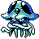
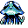

#073
Tentacruel
WaterPoison
The tentacles are normally kept short. On hunts, they are extended to ensnare and immobilize prey
Base stats Total 435
HP80
Attack70
Defense65
Speed100
Special120
Evolution
Evolves from Tentacool — Level 30
Pokédex data
- Species
- Jellyfish Pokémon
- Height
- 5'03"
- Weight
- 121.0 lb
- Catch rate
- 60 / 255
- Base experience
- 205
- Growth rate
- Slow
Level-up moves 11
LevelMoveTypePowerAcc.PP
TM / HM moves 20
TM / HMMoveTypePowerAcc.PP